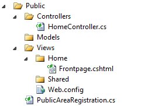

MVC divided (into areas)
Large ASP.NET MVC projects with many controllers and views can become difficult to handle. One solution may be to divide your MVC project into areas.
An area in ASP.NET MVC is a directory with its own MVC directory structure. You can use areas in addition to the default directory structure or you can remove the default directory structure and rely solely on areas.
Here is the directory structure of an area called Public. You can add areas in Visual Studio by right clicking the project in the solution explorer and selecting the appropriate menu item.
public class PublicAreaRegistration : AreaRegistration
{
public override string AreaName
{
get
{
return "Public";
}
}
public override void RegisterArea(AreaRegistrationContext context)
{
context.MapRoute(
"Frontpage",
"",
new { controller = "Home", action = "Frontpage" }
);
}
}For each area we need an area registration class with a RegisterArea method. In this method we put our routes for the area. Make sure your routes are unique across all areas.
protected void Application_Start()
{
AreaRegistration.RegisterAllAreas();
}The code above, which should be in the Global.asax file, takes care of registering all the areas when the application is started.
@Html.ActionLink("Go back", "Frontpage", "Home", new { area = "Public" }, null)One complication you will run into is how to link to a page in another area. Above is how you would insert a link to the Frontpage view in the Public area using razor syntax.
Areas may also be helpful if you are trying integrate ASP.NET MVC into a legacy ASP.NET Web Forms project.